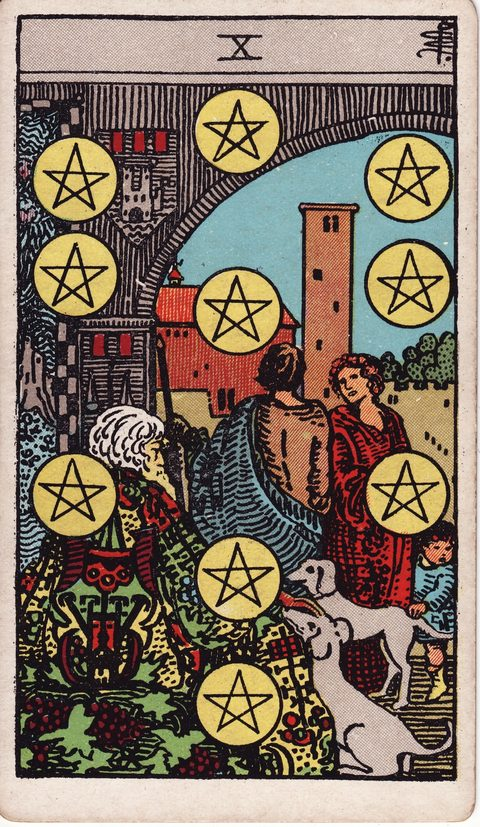
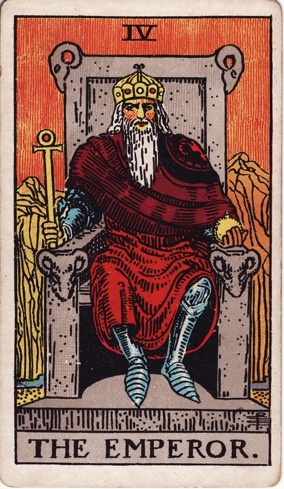
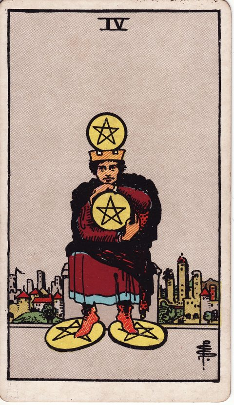
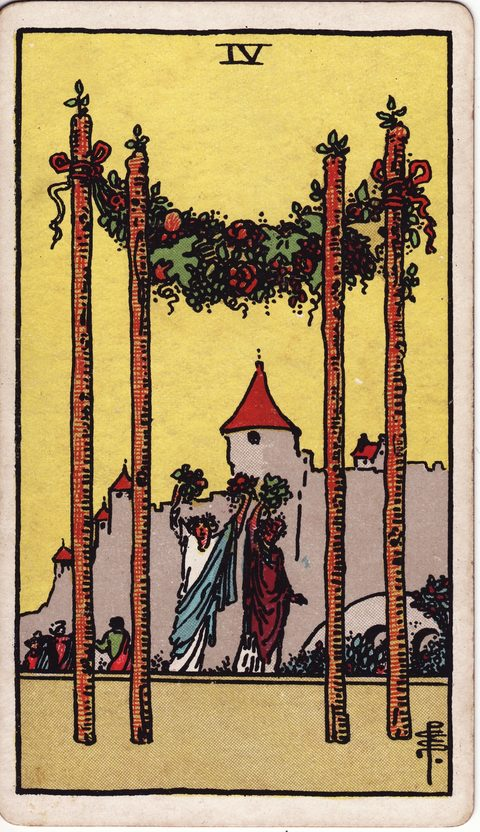
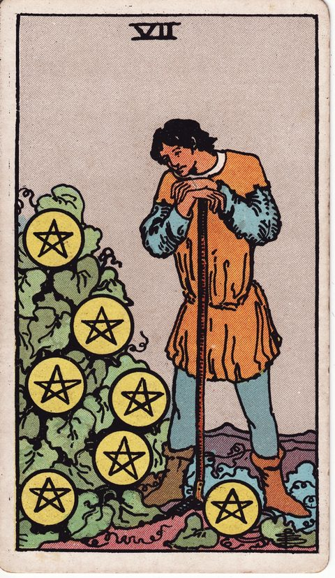

WORRY GUIDE — OTHER
家を買うか迷うとき
モデルルームのソファに座った瞬間、「ここで暮らす自分」が急に具体的になってしまった。営業の人の「今なら」という言葉と、35年というローンの長さのあいだで、気持ちが大きく揺れます。
家は人生で一番大きな買い物です。迷って当然で、むしろ迷わずに決められるほうが危ないくらいです。
先に言っておくと、この決断で大切なのは「買い時」よりも「自分の暮らしとお金の現実に合っているか」です。このページは、その見極め方を案内します。

POINT 01
迷いの正体
家を買えずに迷う理由は、大きく三つあります。一つは、金額の大きさそのものへの恐れです。数千万円の借金を背負うという事実は、冷静な計算とは別に、感情を強く揺らします。
二つ目は、「今が買い時か」というタイミングの迷いです。金利や価格の予測は専門家でも外れるのに、その予測に自分の決断を預けてしまいがちです。
三つ目は、暮らしを固定することへの抵抗です。転職、転勤、家族の変化。将来の自由度を手放すことへの不安が、最後の一歩を止めます。
迷いの正体が見えると、判断の材料は「市場の予測」から「自分の暮らしの条件」に戻ってきます。
POINT 02
整理の視点
まず、お金の現実を数字で置きます。毎月の返済額は手取りの何割か、頭金と諸費用で貯蓄はいくら残るか、収入が減った時期をどう乗り切るか。次に、暮らしの条件です。
この街に、この広さに、あと何年住むのか。条件が先に決まれば、物件は「憧れ」ではなく「合う・合わない」で見られます。最後に、買わない選択肢も同じ土俵で比べます。
賃貸に住み続ける場合の10年、20年の総額と自由度です。この整理は、カードを1枚引いて眺めながらやると進みやすくなります。
カードは買い時を当てるものではなく、今の自分の状態、焦りか、憧れか、地に足のついた希望かを映す鏡です。
迷いの記録をログに残しておくと、物件ごとに何で引っかかったかが見えて、次の検討が速くなります。
POINT 03
カードの読み方
家を買うかの迷いでは、「安定」「基盤」「所有」「祝い」「見極め」を表すカードが手がかりになります。
ペンタクルの10は、家族が集う豊かな住まいの姿。長期的な安定と、暮らしの基盤としての家を表します。

皇帝は、どっしりと玉座に座る姿。自分の領域を築き、守る責任を引き受ける覚悟を示します。

ペンタクルの4は、金貨を抱え込む人物。お金を手放すことへの抵抗と、貯蓄を守りたい気持ちの両方を映します。

ワンドの4は、花の冠の下で祝う人々の姿。住まいがもたらす安らぎと、節目を祝う気持ちを表します。

ペンタクルの7は、育った作物を見つめる人物。時間をかけて見極め、実りを待つ長期の視点です。
POINT 04
自分への問いかけ
次の問いに答えてみてください。毎月の返済は、収入が2割減っても続けられるか。頭金を払ったあと、安心できる貯蓄は残るか。この街とこの広さは、5年後の暮らしにも合っているか。
買いたい理由は、暮らしの必要か、「今なら」という焦りか。買わない場合の10年を、具体的に想像できるか。答えが揃ったら、あとは決めるだけです。
家は、買うことも、買わないことも、どちらも立派な決断です。市場の声ではなく、自分の条件で決めたと言えることが、この大きな選択の納得感を決めます。
CARDS
この迷いに関係するカード
READING
この迷いをもっと深く読む
MORE WORRIES